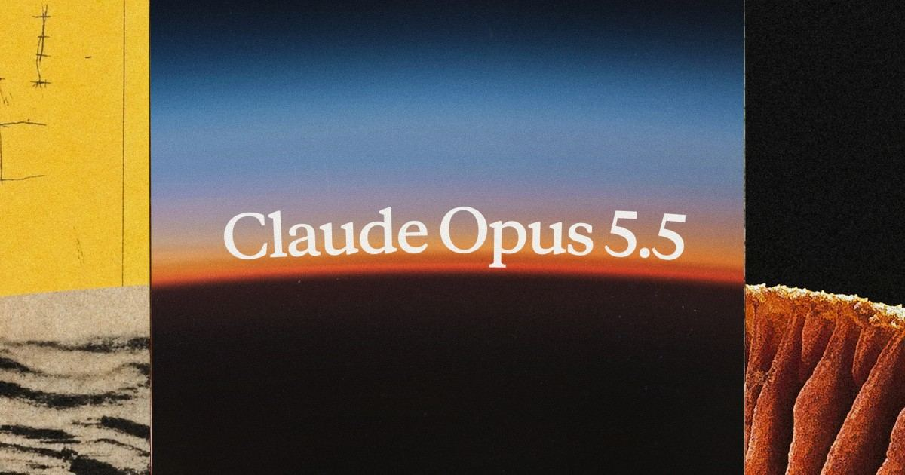

01 Anthropic 게시일 2026.09.22
Anthropic, Opus 5.5 가격 40% 낮췄다

이 모델은 긴 코딩 작업과 복잡한 지식 업무를 더 적은 비용으로 처리하겠다는 목적을 가진다. 비개발자 기준으로 보면, 같은 수준의 보고서 작성이나 분석, 코드 검토를 더 빨리 끝내고 사용료도 낮추겠다는 발표다. Anthropic은 성능 향상과 함께 안전 평가와 접근 통제도 같이 강화했다고 밝혔다.
핵심 브리핑
Claude Opus 5.5는 Claude 5.5 계열의 첫 모델이다. Anthropic은 이 모델이 대부분의 업무에서 Claude Fable 5.1 수준으로 동작한다고 밝혔다. 기본 설정 기준으로는 Opus 5보다 일반 작업 비용이 40% 낮다. 출력 생성 속도도 Opus 5보다 30% 이상 빠르다.
Anthropic은 출시 전에 Frontier Design과 METR가 이 모델을 시험했다고 밝혔다. 자사 자동 행동 감사에서는 지금까지 시험한 모델 중 가장 높은 점수를 받았다고 설명했다. 이 평가는 수천 개의 가상 시나리오에서 모델이 경계를 지키는지 본다. Anthropic은 긴 작업, 불가능한 작업, 실제 사고를 본뜬 시나리오까지 시험 범위를 넓혔다고 덧붙였다.
- 입력 가격은 100만 토큰당 4달러다.
- 출력 가격은 100만 토큰당 20달러다.
- 캐시 읽기 가격은 100만 토큰당 0.20달러다.
- 입력·출력 가격은 Opus 5보다 20% 낮다.
- 캐시 읽기 가격은 Opus 5보다 60% 낮다.
초기 시험 사례도 함께 공개했다. 한 사용자는 68만 줄 코드 이전 작업을 하루 안에 마쳤다고 말했다. Anthropic은 웹 앱 전 페이지의 로딩 시간을 줄이라는 내부 시험에서 Opus 5.5가 40번 중 39번 성공했다고 밝혔다. 같은 시험에서 Opus 5는 개선 폭이 더 작았고 앱 동작도 바꿨다고 설명했다. 또 다른 내부 시험에서는 HAProxy를 C에서 Rust로 옮기는 작업을 시켰다. Opus 5.5는 9.5시간이 걸렸고 Fable 5.1은 12시간이 걸렸다. 비용은 Opus 5.5 쪽이 51% 낮았다.
주요 트렌드
이번 발표의 중심은 최고 성능보다 효율 경쟁이다. Anthropic은 Opus 5.5가 토큰당 가격이 낮을 뿐 아니라 작업당 쓰는 토큰도 적다고 설명했다. 그래서 최종 비용이 40% 줄었다는 주장이다.
비교 수치도 이 모델의 가격 경쟁력을 보여준다. Anthropic은 FrontierCode에서 기본 노력 수준의 Opus 5.5가 GPT-6 Astra보다 작업당 비용이 약 20% 수준이라고 밝혔다. Terminal-Bench 4.0에서는 GPT-6 Astra와 비슷한 점수를 약 40% 비용으로 냈다고 설명했다. CursorBench에서는 GPT-5.6 Sol보다 11점 높고 작업당 비용은 약 3분의 1이라고 밝혔다. 같은 성능권에서 더 싸거나, 더 높은 점수를 비슷한 비용으로 낸다는 뜻이다.
빠른 응답이 필요한 수요도 따로 겨냥했다. Anthropic은 Claude Code와 Claude Platform에 Opus 5.5용 Fast mode도 넣었다. 이 모드는 최대 2.5배 빠르다. 대신 가격은 기본형보다 높다.
- Fast mode 입력 가격은 100만 토큰당 8달러다.
- Fast mode 출력 가격은 100만 토큰당 40달러다.
- Pro, Max, Team, 좌석형 Enterprise의 5시간 사용 한도도 높인다.
- 구독 사용자는 한도 초기화를 저장해 원하는 때에 쓸 수 있다.
업계의 움직임
여러 매체가 이번 발표를 상위 모델 경쟁의 가격전으로 함께 다뤘다. Simon Willison은 별도 글에서 Opus 5.5와 GPT-6 계열, 새 가격 경쟁을 묶어 분석했다. Anthropic은 자사 블로그에서 코딩 세션이 길어지고 문맥 사용량이 커지는 흐름에 맞춰 모델을 설계했다고 설명했다.
시사점과 체크포인트
우리 회사가 검토할 포인트는 성능보다 작업당 총비용이다. 긴 문서 검토, 코드 분석, 운영 자동화처럼 토큰 사용량이 큰 업무에서 절감 폭이 실제로 나오는지 봐야 한다.
보안팀과 AI 거버넌스 담당은 안전 장치의 작동 방식도 확인할 필요가 있다. Anthropic은 사이버보안과 생물 관련 작업에서 일부 요청에 접근 통제를 건다고 밝혔다. 고위험 요청만 막는다고 했지만, 실제 업무에서 어떤 요청이 차단되는지는 사전 시험이 필요하다.
체크포인트는 세 가지다.
- 우리 업무 기준으로 작업당 토큰 수가 얼마나 줄어드는지 본다.
- Fast mode가 필요한 부서와 기본형이 맞는 부서를 나눈다.
- 외부 벤치마크가 아닌 사내 업무 묶음으로 품질과 재작업률을 같이 잰다.
Anthropic도 벤치마크 격차가 실제 현장 차이를 그대로 보여주지 않는다고 적었다. 특히 Opus 5.5와 Fable 5.1의 실제 격차는 점수보다 작을 수 있다고 밝혔다. 도입 판단은 공개 점수만으로 내리기 어렵다.
주요 용어
원문 정보
제목: Claude Opus 5.5
게시일: 2026.09.22